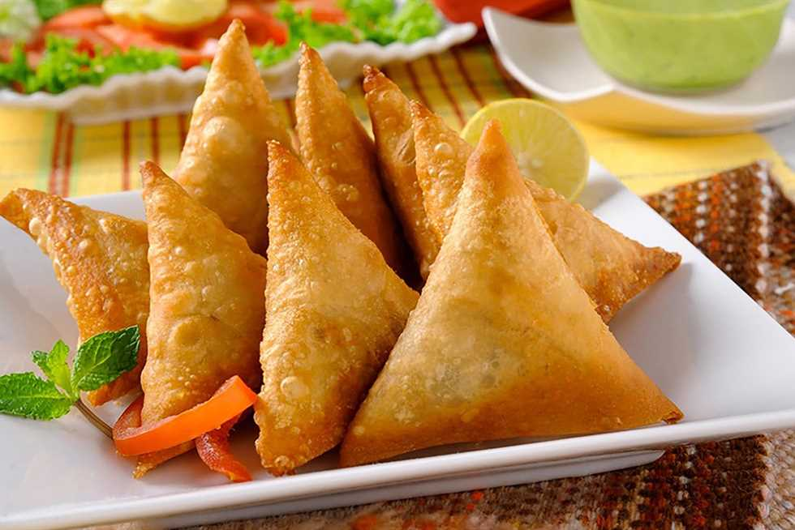

| Dish | Description | Price | image |
|---|---|---|---|
| Sambusa | Sambusa is a golden, crispy pastry filled with a delicious blend of spiced meat, vegetables, or lentils. Each triangle is carefully folded and fried to perfection, offering a crunchy bite on the outside and a warm, flavorful filling on the inside. | 10 ILS |  |
| Kabsa | Kabsa is a traditional rice dish bursting with bold spices and Middle Eastern flair. Made with fragrant basmati rice, tender slow-cooked meat (often lamb or chicken), and a perfectly balanced blend of cloves, cardamom, cinnamon, black lime, and bay leaves—Kabsa is a true celebration on a plate. | 25 ILS | |
| mandy | It consists mainly of meat and rice with a blend of spices, and is cooked in a pit | 30 ILS |